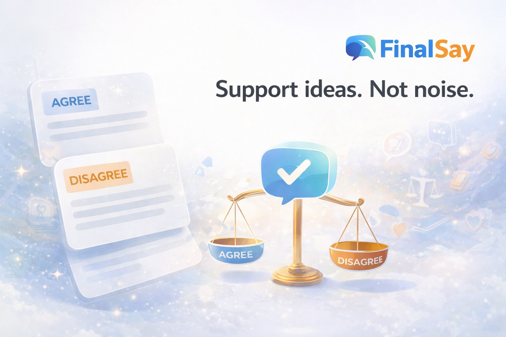
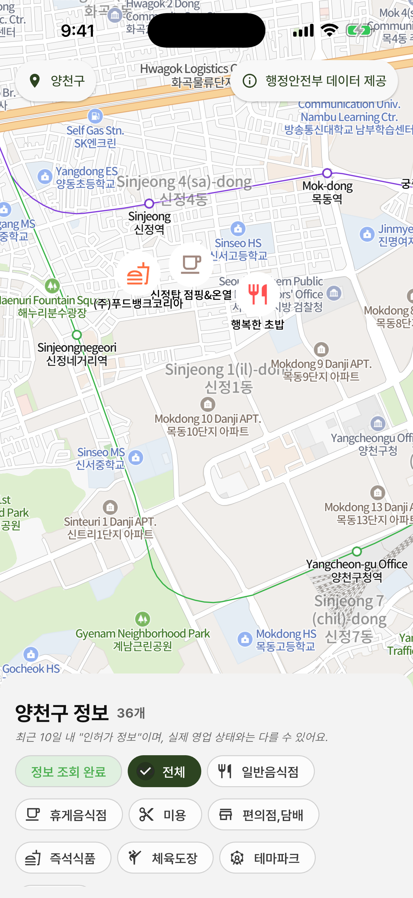
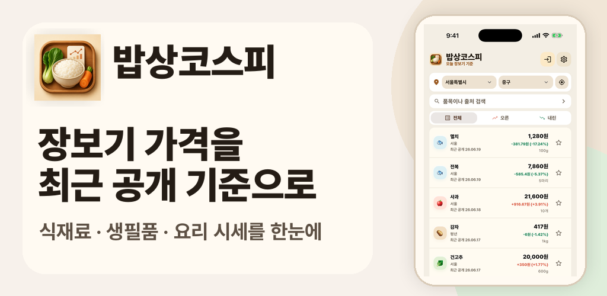
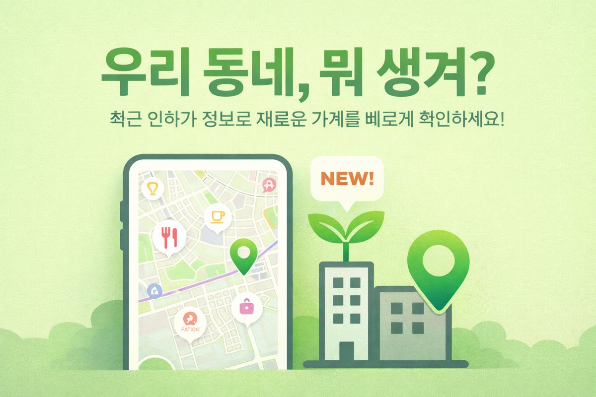
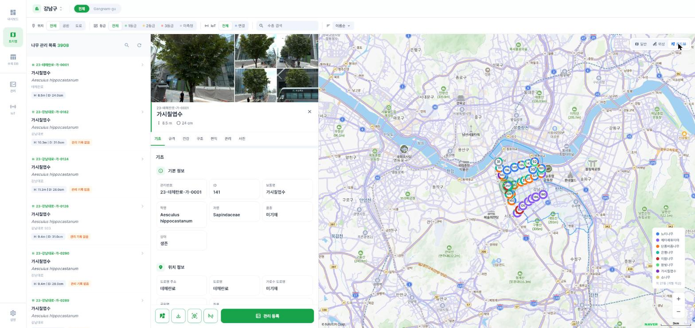
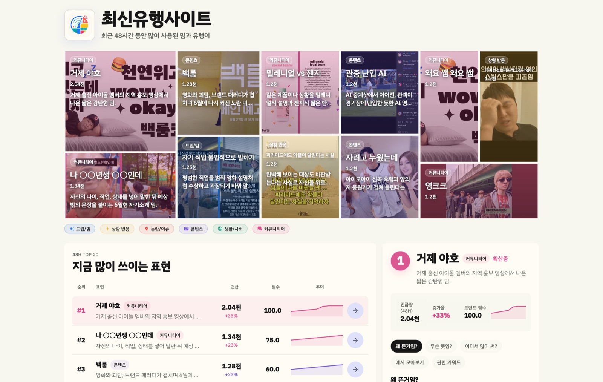

FinalSay
사람이 주장하고 공감하면 AI가 양측 논리를 읽고 판결하는 토론 앱
- 고민
- AI가 전부 말하면 사용자가 참여할 이유가 없었습니다.
- 담당
- 토론·주장·공감·판결, OAuth, JWT 갱신, FCM, 딥링크, 광고
- 결과
- App Store 배포, 토론 seed와 숏폼 운영 자동화까지 확장
Flutter Mobile Developer · AI Automation
Flutter로 Android와 iOS 앱을 만들고 출시·운영해 왔습니다. 최근에는 Python, TypeScript, Node.js와 AI 에이전트를 이용해 반복 업무와 콘텐츠 운영을 자동화하고 있습니다.



Experience
화면 구현보다 인증, API, 상태, 외부 SDK, 배포가 이어지는 전체 흐름을 맡았습니다.
Flutter 앱 개발 · Backend API · AI 업무 자동화
리워드형 다이어리 앱의 인증·소셜 로그인·이미지 업로드·광고 보상 흐름을 개발하고, GPS·FCM·iOS 배포 오류를 해결했습니다. Flutter Web과 Node.js로 도시 수목 관리 플랫폼도 구축했습니다.
Flutter 앱 개발 · 프론트엔드 파트장
주차 관리, 스테이킹, 지갑·채굴기 관리 앱을 개발했습니다. Bloc/Cubit, REST API, GraphQL, JWT, FCM, Dynamic Link를 적용하고 Play Store와 App Store 배포를 담당했습니다.
Django 백엔드 · OCR 도구 · Flutter 앱 개발
Django, OpenCV, MySQL로 OCR 라벨링 도구를 만들고 Flutter OCR 앱에서 카메라 입력, 결과 비교, 데이터 저장 흐름을 연결했습니다.
Selected Projects
사람이 주장하고 공감하면 AI가 양측 논리를 읽고 판결하는 토론 앱
일기 작성과 광고 보상, 포인트, 기프티콘 교환을 연결한 리워드 앱

내 주변의 최근 인허가 정보를 지도에서 찾는 위치 기반 앱

LiDAR 수목 데이터를 지도·로드뷰·IoT로 관리하는 B2G 플랫폼

최근 48시간의 밈·유행어를 evidence와 함께 보여주는 트렌드 대시보드
AI & Automation
입력 수집부터 검증, 저장, 업로드, 실패 기록과 재실행까지 한 흐름으로 다룹니다.
뉴스 RSS → 토론 seed 생성 → 검증 → 내부 API 등록
주제 → 대본 → TTS → 영상 렌더링 → YouTube 업로드 → 성과 확인
사용자 선택 → 본문 분석 → 문서 작성 → 민감정보 검사 → 제출 → 상태 추적
중복 실행 사고 이후 로컬·웹·작성 이력·실행 결과를 함께 검사하도록 개선
작업 분해 → 구현 → 실행 확인 → 테스트 → 교차 검토 → 배포 준비
Codex와 Claude Code의 산출물을 앱 동작, API 응답, 사용자 흐름으로 확인
Skills
Flutter, Dart, Bloc/Cubit, Dio, Hive, Firebase, FCM, OAuth, Deep Link, AdMob
Node.js, Django, REST API, GraphQL, MySQL, PostgreSQL, SQLite, Supabase
OpenAI API, Codex, Claude Code, Python, TypeScript, MoviePy, TTS, YouTube API
Contact
Flutter 모바일 앱 개발과 AI 기반 업무 자동화 경험이 필요한 팀을 찾고 있습니다.